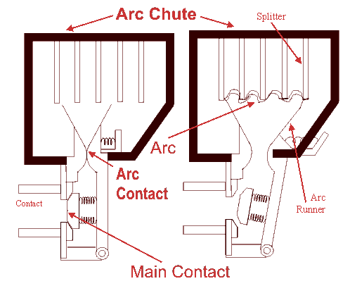
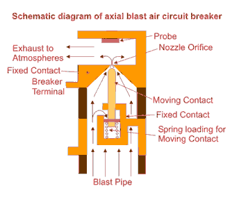
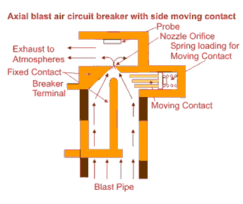
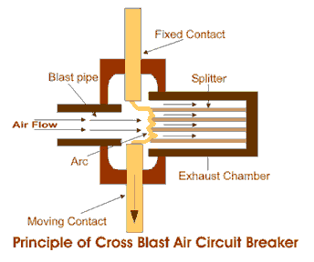

Types of ACB
Operation of ACB
Air Blast Circuit Breaker
Axial Blast Air Circuit Breaker
Axial Blast ACB with Side Moving Contact
Cross Blast Air Circuit Breaker
This type of circuit breakers, is those kind of circuit breaker which operates in air at atmospheric pressure. After development of oil circuit breaker, the medium voltage air circuit breaker (ACB) is replaced completely by oil circuit breaker in different countries. But in countries like France and Italy, ACBs are still preferable choice up to voltage 15 KV. It is also good choice to avoid the risk of oil fire, in case of oil circuit breaker. In America ACBs were exclusively used for the system up to 15 KV until the development of new vacuum and SF6 circuit breakers.
Working Principle of Air Circuit Breaker
The working principle of this breaker is rather different from those in any other types of circuit breakers. The main aim of all kind of circuit breaker is to prevent the reestablishment of arcing after electric current zero by creating a situation where in the contact gap will withstand the system recovery voltage. The air circuit breaker does the same but in different manner. For interrupting arc it creates an arc voltage in excess of the supply voltage. Arc voltage is defined as the minimum voltage required maintaining the arc. This circuit breaker increases the arc voltage by mainly three different ways,
- It may increase the arc voltage by cooling the arc plasma. As the temperature of arc plasma is decreased, the mobility of the particle in arc plasma is reduced, hence more voltage gradient is required to maintain the arc.
- It may increase the arc voltage by lengthening the arc path. As the length of arc path is increased, the resistance of the path is increased, and hence to maintain the same arc electric current more voltage is required to be applied across the arc path. That means arc voltage is increased.
- Splitting up the arc into a number of series arcs also increases the arc voltage.
Types of ACB
There are mainly two types of ACB are available.
- Plain air circuit breaker.
- Air blast Circuit Breaker.
Operation of ACB
This was working principle of air circuit breaker now we will discuss in details the operation of ACB in practice.
The air circuit breaker, operated within the voltage level 1 KV, does not require any arc control device. Mainly for heavy fault electric current on low voltages (low voltage level above 1 KV) ABCs with appropriate arc control device, are good choice. These breakers normally have two pairs of contacts. The main pair of contacts carries the electric current at normal load and these contacts are made of copper. The additional pair is the arcing contact and is made of carbon. When circuit breaker is being opened, the main contacts open first and during opening of main contacts the arcing contacts are still in touch with each other. As the electric current gets, a parallel low resistive path through the arcing contact during opening of main contacts, there will not be any arcing in the main contact. The arcing is only initiated when finally the arcing contacts are separated. The each of the arc contacts is fitted with an arc runner which helps, the arc discharge to move upward due to both thermal and electromagnetic effects as shown in the figure. As the arc is driven upward it enters in the arc chute, consisting of splitters. The arc in chute will become colder, lengthen and split hence arc voltage becomes much larger than system voltage at the time of operation of air circuit breaker, and therefore the arc is quenched finally during the electric current zero.

Although this type of circuit breakers have become obsolete for medium voltage application, but they are still preferable choice for high electric current rating in low voltage application.
Air Blast Circuit Breaker
These types of air circuit breaker were used for the system voltage of 245 KV, 420 KV and even more, especially where faster breaker operation was required. Air blast circuit breaker has some specific advantages over oil circuit breaker which are listed as follows,
- There is no chance of fire hazard caused by oil.
- The breaking speed of circuit breaker is much higher during operation of air blast circuit breaker.
- Arc quenching is much faster during operation of air blast circuit breaker.
- The duration of arc is same for all values of small as well as high currents interruptions.
- As the duration of arc is smaller, so lesser amount of heat realized from arc to electric current carrying contacts hence the service life of the contacts becomes longer.
- The stability of the system can be well maintained as it depends on the speed of operation of circuit breaker.
- Requires much less maintenance compared to oil circuit breaker.
There are also some disadvantages of air blast circuit breakers-
- In order to have frequent operations, it is necessary to have sufficiently high capacity air compressor.
- Frequent maintenance of compressor, associated air pipes and automatic control equipments is also required.
- Due to high speed electric current interruption there is always a chance of high rate of rise of re-striking voltage and electric current chopping.
- There also a chance of air pressure leakage from air pipes junctions.
As we said earlier that there are mainly two types of ACB, plain air circuit breaker and air blast circuit breaker. But the later can be sub divided further into three different categories.
- Axial Blast ACB.
- Axial Blast ACB with side moving contact.
- Cross Blast ACB.
Axial Blast Air Circuit Breaker

In axial blast ACB the moving contact is in contact with fixed contact with the help of a spring pressure as shown in the figure. There is a nozzle orifice in the fixed contact which is blocked by tip of the moving contact at normal closed condition of the breaker. When fault occurs, the high pressure air is introduced into the arcing chamber. The air pressure will counter the spring pressure and deforms the spring hence the moving contact is withdrawn from the fixed contact and nozzle hole becomes open. At the same time the high pressure air starts flowing along the arc through the fixed contact nozzle orifice. This axial flow of air along the arc through the nozzle orifice will make the arc lengthen and colder hence arc voltage become much higher than system voltage that means system voltage is insufficient to sustain the arc consequently the arc is quenched.
circuit breaker with side moving contact" title="Axial Blast Air Circuit Breaker with side moving contact" class="alignleft"/>
Axial Blast ACB with Side Moving Contact
In this type of axial blast air circuit breaker the moving contact is fitted over a piston supported over a spring. In order to open the circuit breaker the air is admitted into the arcing chamber when pressure reaches to a predetermined value, it presses down the moving contact; an arc is drawn between the fixed and moving contacts. The air blast immediately transfers the arc to the arcing electrode and is consequently quenched by the axial flow of air.
Cross Blast Air Circuit Breaker

The working principle of cross blast air circuit breaker is quite simple. In this system of air blast circuit breaker the blast pipe is fixed in perpendicular to the movement of moving contact in the arcing chamber and on the opposite side of the arcing chamber one exhaust chamber is also fitted at the same alignment of blast pipe, so that the air comes from blast pipe can straightly enter into exhaust chamber through the contact gap of the breaker. The exhaust chamber is spit with arc splitters. When moving contact is withdrawn from fixed contact, an arc is established in between the contact, and at the same time high pressure air coming from blast pipe will pass through the contact gap and will forcefully take the arc into exhaust chamber where the arc is split with the help of arc splitters and ultimately arc is quenched.
 by
by